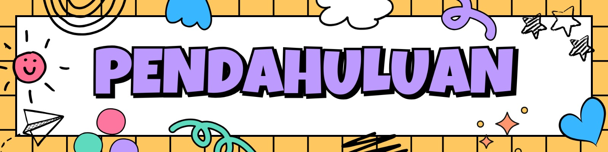

A. Latar Belakang
Salah satu aspek dalam pendidikan adalah tentang numerasi, yakni kemampuan individu untuk memahami dan menggunakan konsep matematika dalam konteks kehidupan sehari- hari. Numerasi merupakan kemampuan fundamental yang harus dikuasai setiap individu untuk dapat bermakna dalam kehidupan sehari-hari. Numerasi tidak hanya terbatas pada kemampuan berhitung, tetapi juga melibatkan penalaran, pemecahan masalah, dan pengambilan keputusan berdasarkan data dan informasi kuantitatif. Bagi murid dengan hambatan tertentu di SDLB, pembelajaran numerasi memiliki kompleksitas tersendiri yang memerlukan pendekatan khusus dan adaptasi yang tepat. Guru SDLB menghadapi tantangan yang berbeda dibandingkan guru sekolah regular dalam mengimplementasikan pembelajaran numerasi yang efektif dan bermakna.
Pembelajaran literasi numerasi di SDLB membutuhkan tekad guru yang kuat karena memerhatikan keragaman kondisi hambatan murid dan keterbatasan media pembelajaran numerasi. Realita menunjukkan bahwa satu kelas SDLB terdiri atas murid dengan hambatan pendengaran, intelektual, atau hambatan ganda memiliki variasi jenis dan tingkat hambatan yang berbeda-beda. Setiap jenis hambatan memerlukan strategi pembelajaran numerasi yang spesifik dan berbeda pula. Selain itu minimnya ketersediaan media pembelajaran numerasi yang adaptif dan aksesibel untuk berbagai jenis kebutuhan khusus juga menjadi tantangan lainnya. Media pembelajaran konvensional seringkali tidak dapat diakses atau dipahami dengan baik oleh murid dengan hambatan tertentu, sehingga guru harus melakukan modifikasi atau bahkan membuat media pembelajaran sendiri.
Untuk mengatasi tantangan tersebut, diperlukan pengembangan kompetensi guru yang berkelanjutan, penyediaan media pembelajaran yang inklusif dan aksesibel, serta dukungan sistem yang komprehensif dari berbagai pihak. Guru perlu dibekali dengan pelatihan khusus tentang teknik pembelajaran numerasi yang disesuaikan dengan karakteristik setiap jenis hambatan, mulai dari penggunaan bahasa isyarat untuk murid dengan hambatan pendengaran, dan pendekatan konkret-visual untuk murid dengan hambatan intelektual. Selain itu, sekolah dan pemerintah perlu berkolaborasi dalam menyediakan media pembelajaran yang dapat diakses oleh murid dengan hambatan belajar. Dukungan dari orangtua dan masyarakat juga sangat penting dalam menciptakan lingkungan belajar yang mendukung di rumah dan lingkungan sekitar. Penanganan yang tepat terhadap kedua tantangan ini akan berkontribusi signifikan terhadap peningkatan kualitas pembelajaran numerasi bagi murid dengan hambatan tertentu, sehingga mereka dapat mengembangkan kemampuan numerasi yang optimal sesuai dengan potensi dan kebutuhan masing-masing.
B. Tujuan Pembelajaran
Setelah mengikuti seluruh kegiatan dalam modul ini, Bapak/Ibu diharapkan mampu:
- Menjelaskan pengertian dan fungsi media pembelajaran.
- Mengidentifikasi karakteristik media pembelajaran numerasi yang sesuai dengan kebutuhan murid dengan hambatan pendengaran dan hambatan intelektual.
- Mengklasifikasikan jenis media pembelajaran numerasi (konkret. Semi konkret, virtual) bagi murid dengan hambatan pendengaran.
- Menjelaskan keunggulan dan kekurangan masing-masing jenis media pembelajaran numerasi bagi murid dengan hambatan pendengaran dan hambatan intelektual.
- Praktik baik pemanfaatan media pembelajaran numerasi untuk murid dengan hambatan pendengaran.
- Memahami ragam media pembelajaran numerasi yang sesuai untuk murid dengan hambatan pendengaran.
- Praktik baik pemanfaatan media pembelajaran numerasi untuk murid dengan hambatan intelektual.
- Memahami ragam media pembelajaran numerasi yang sesuai untuk murid dengan hambatan intelektual.
C. Deskripsi Singkat Materi
Modul 3 Media Pembelajaran Numerasi di SDLB disusun untuk memperdalam pemahaman guru tentang media pembelajaran numerasi bagi murid dengan hambatan pendengaran dan hambatan intelektual sehingga dapat meningkatkan mutu layanan pendidikan di satuan pendidikan. Materi inti mencakup tentang media pembelajaran di SDLB, media pembelajaran literasi numerasi di SDLB, dan praktik baik pemanfaatan media pembelajaran numerasi untuk murid dengan hambatan pendengaran dan hambatan intelektual jenjang SDLB.
Modul ini merupakan bahan belajar yang diarahkan untuk pembelajaran mandiri yang memfasilitasi kegiatan peningkatan kompetensi tenaga kependidikan (guru pendidikan khusus/ sekolah luar biasa). Alokasi waktu belajar untuk tiga topik adalah 10 jam pelajaran (@45 menit). Strategi pembelajaran yang digunakan mengacu pada pendekatan experiential learning dan collaborative learning, yang menekankan partisipasi aktif, refleksi, dan pertukaran praktik baik antarpeserta.
D. Topik, Kegiatan dan Alokasi Waktu
Sub topik, kegiatan dan alokasi waktu untuk mempelajari modul media pembelajaran numerasi di SDLB pada anak dengan hambatan pendengaran dan hambatan intelektual yang dijelaskan dalam tabel di bawah ini.
| Sub Topik | Kegiatan | Alokasi Waktu |
| Kegiatan Belajar 1: Pemahaman media pembelajaran di SDLB |
|
2 JP |
| Kegiatan Belajar 2: Pemanfaatan media pembelajaran numerasi untuk murid dengan hambatan pendengaran |
|
4 JP |
|
Kegiatan Belajar 3: |
|
4 JP |